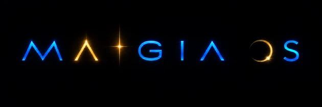
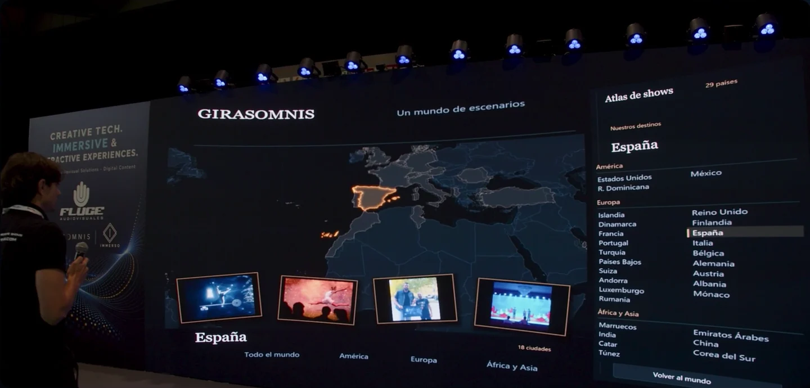
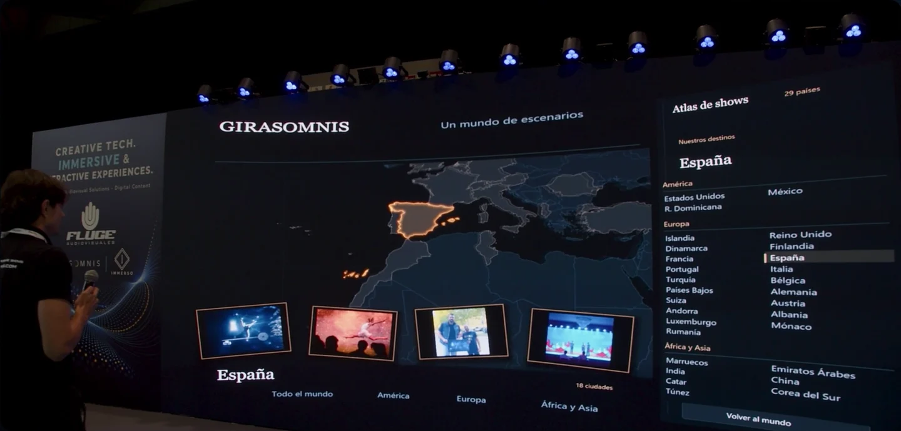
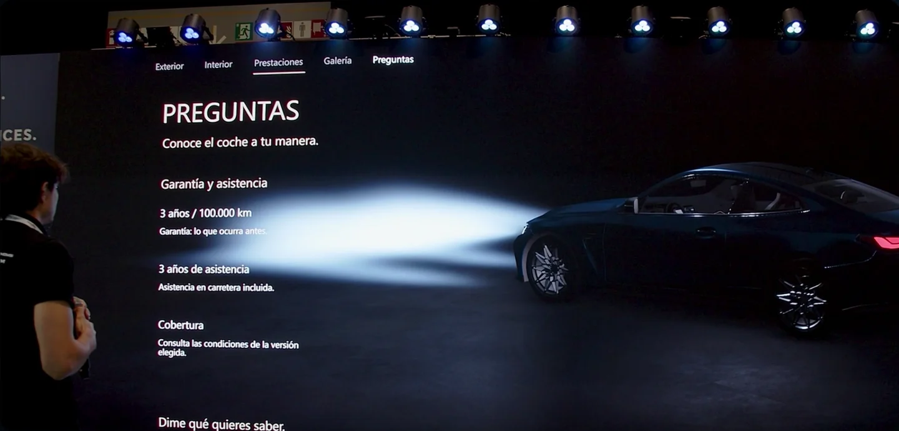
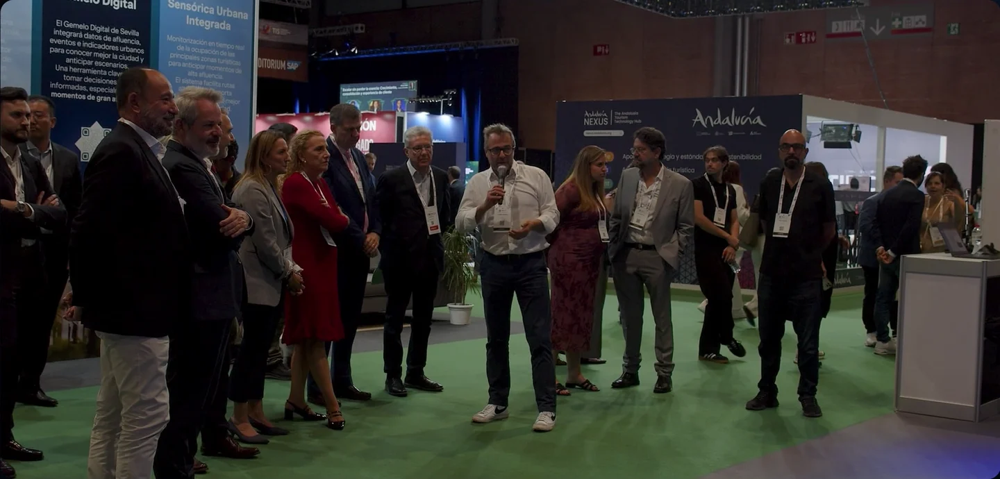
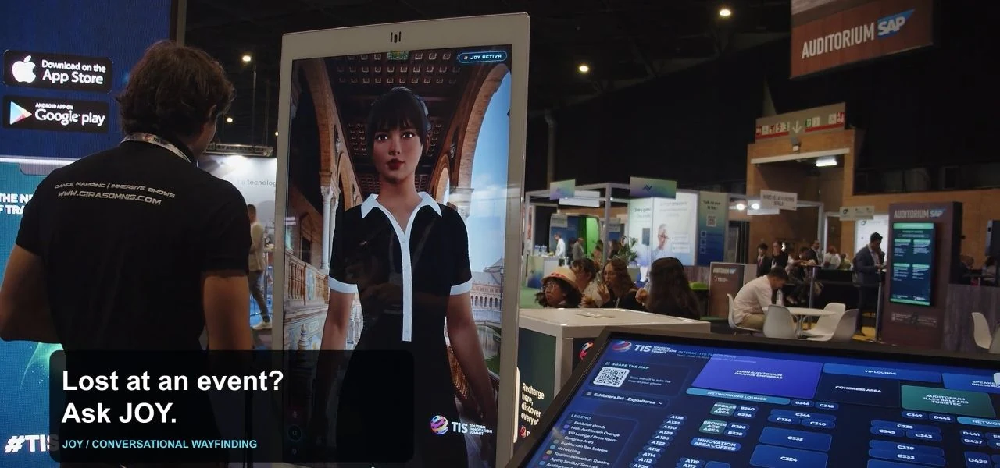
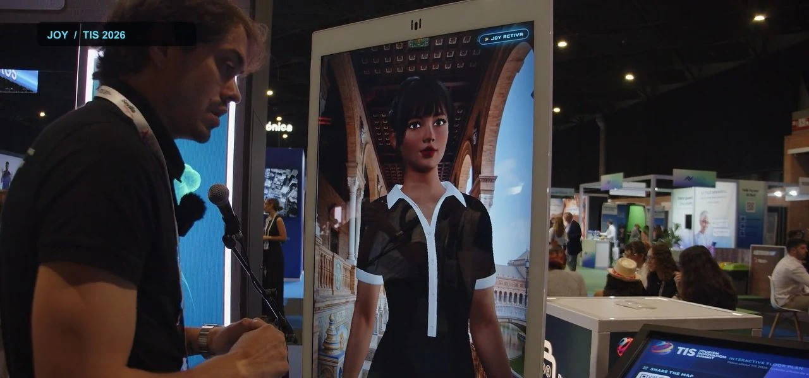

Lighting
Activate scenes and change the atmosphere.

← maigia.techAI-POWERED AUDIOVISUAL OPERATING SYSTEM
One presenter directs content, lighting, sound and video using their voice. We prepare the actions and integrations for each project.

MAIGIA OS presentation1:38Can you change the colour to red?
What if you could control an entire audiovisual experience simply by speaking? The lighting, the sound, the video and any other connected system. Meet MAIGIA OS, a revolutionary audiovisual control system powered by artificial intelligence. You set the direction with your voice. AI interprets your commands and puts the connected systems into action.
Play a video. Change the lighting. Adjust the music. Open a map. Explore a project. Your voice directs the experience.
During a presentation, a question can take you somewhere unexpected. MAIGIA OS lets you follow that path. Find a destination on the map. Explore its photographs and play its story. Present a product and its details or ask for more information.
I would like to know what warranty this vehicle comes with.
AI uses your project’s content and the presentation’s context to understand your request and choose the right action.
We build each experience around your story, connecting content and systems, designing voice control and rehearsing with your team. You lead. AI pilots the systems. Your audience experiences the result.
MAIGIA OS. Your voice. The whole experience. Created by Girasomnis. Powered by FLUGE AUDIOVISUALES BARCELONA.
VOICE IN ACTION
Maps, projects and products: a request from the presenter brings up the content prepared for that moment.
“Rotate the car, turn it.”
The presenter requests a change and directs what appears on screen. The full demonstration shows how to navigate a product and ask for information using your voice.
5:22 · Audio in Spanish

“Open a map.”
Choose a place on the map and the photographs or videos you want to present. Continue the story through the Girasomnis portfolio.

“I would like to know what warranty this vehicle comes with.”
AI interprets the request using the project information and the active section. The vehicle information is demonstration data.
Watch the full demonstrationHOW IT WORKS
The audience asks the presenter, who decides what to show. AI interprets their requests using materials prepared for the project.
The conversation opens a new possibility.
They request an image, a video or project information.
It activates the configured content or action.
We configure the actions around the equipment and content in each project.
Activate scenes and change the atmosphere.
Control music playback and audio cues.
Open content and direct the screen.
Add actions through project integrations.
APPLICATIONS
Current applications with one presenter or guide.
When asked a question, the presenter requests an image, a fact or a video.
An adviser presents the product and controls its views and details using their voice.
The presenter introduces a destination and opens its images or videos on the map.
A guide leads the visit and expands the story with content prepared for the group.
PROJECT PREPARATION
We prepare the content and actions with the presenter and the technical team.

We define the story and how the presenter responds to questions from the audience.
We prepare the content and connect the systems your project needs.
We define the presenter’s requests and how each system responds.
We rehearse with the presenter and the technical team.
PROPOSED EVOLUTION
Avatar integration and local operation are the first priorities of the proposed evolution.
Integrate an existing avatar that talks to the presenter and supports the content.
Prepare sessions that can run without an internet connection.

JOY at TIS · Avatar demonstration1:00Proposed developments. Availability depends on integration and validation.
Incorporate questions and choices guided by the presenter.
Extend the story through the space with imagery, sound and lighting.
PROPOSED EXPERIENCE

The presenter invites an avatar to join and brings in an audience question. The avatar explains a destination as its images appear. The group chooses: coast or mountains. Imagery, sound and lighting follow the prepared route. The presenter resumes the story.
Concept scenario. Guided participation and local operation are development goals.
LET’S TALK ABOUT YOUR EXPERIENCE
What do you want to share, who will take part and in what space? We define the experience and its integrations with you.